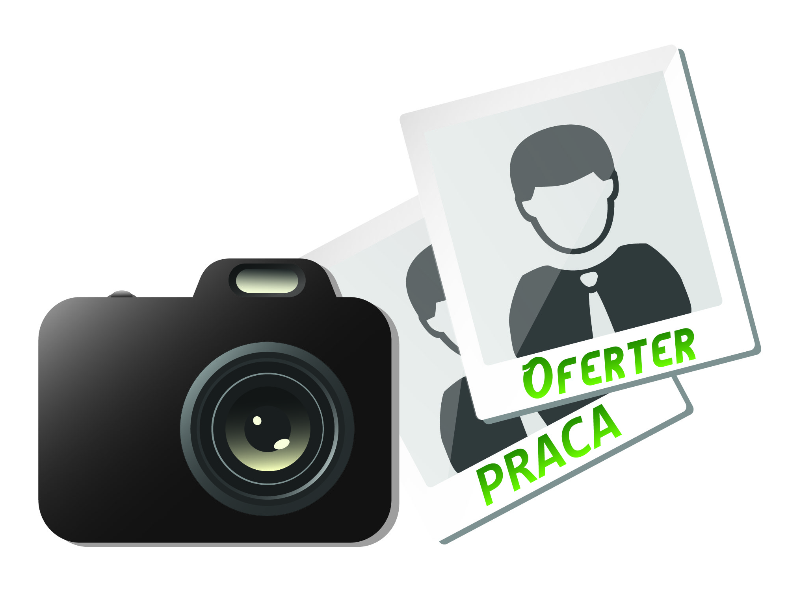
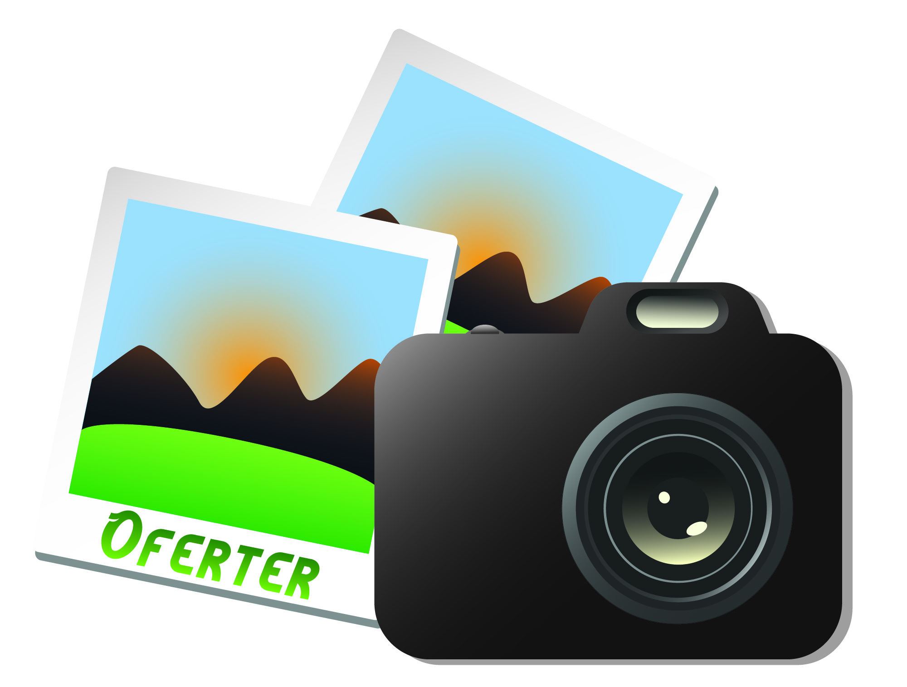

Kilka projektów grafik na koszulki na zamówienie. (Krita, Inkscape)


Ikony "no photo" stworzone dla strony Oferter.pl oraz wersja uniwersalna. (Illustrator)
Kilka akademickich projektów. (InDesign/Photoshop/Illustrator)
Projekt logo aplikacji shiftme.pl (Illustrator, Photoshop)
Hobbystycznie zajmuję się tworzeniem ilustracji oraz animacją. Używam programów takich jak Photoshop, Paint Tool Sai, Krita, Premiere Pro, Inkscape.
Posiadam także umiejętność bardzo dobrego szkicu odręcznego.